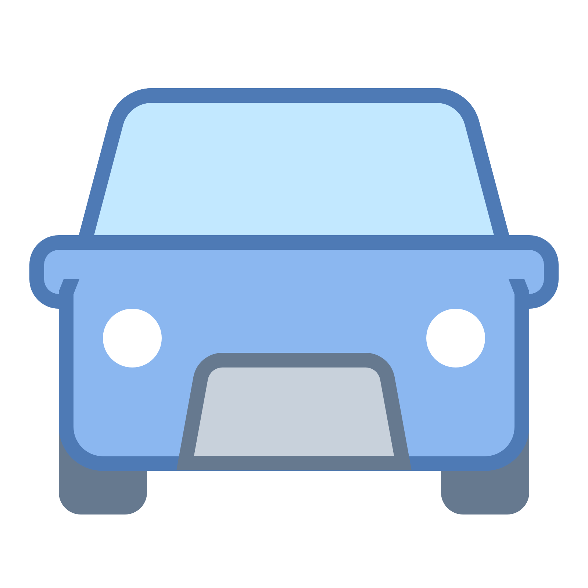

<!--
  Generated template for the CadastroPage page.

  See http://ionicframework.com/docs/components/#navigation for more info on
  Ionic pages and navigation.
-->
<ion-header>

  <ion-navbar color="primary">
    <ion-title>Cadastro</ion-title>
  </ion-navbar>

</ion-header>


<ion-content padding>
  <ion-list>

    
    

    <ion-item>
      <ion-label floating>Nome</ion-label>
      <ion-input  [(ngModel)]="user.nome" type="text"></ion-input>
    </ion-item>

    <ion-item>
      <ion-label floating>CPF</ion-label>
      <ion-input [(ngModel)]="user.cpf" type="number"></ion-input>
    </ion-item>

    <ion-item>
      <ion-label floating>Email</ion-label>
      <ion-input [(ngModel)]="userLogin.email" type="email"></ion-input>
    </ion-item>

    <ion-item>
      <ion-label floating>Senha</ion-label>
      <ion-input [(ngModel)]="userLogin.senha" type="password"></ion-input>
    </ion-item>
  </ion-list>

  <div>
    <button ion-button color="primary" block (click)="cadastrar(userLogin, user)" >Cadastrar</button>
  </div>

</ion-content>
